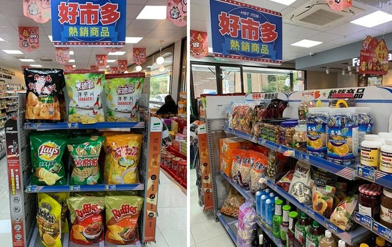

好市多商品超商也買得到
最大差異曝光！網友：年費沒白繳
最大差異曝光！網友：年費沒白繳

美式賣場好市多由於販售種類眾多，且價格比外面市售便宜，是許多人常去的賣場，一名女會員卻發現，現在超商也買得到好市多熱銷商品，讓她一度崩潰喊「那我繳年費是為了什麼？」但經過她細心比較後，發現最大差異，讓她安心地寫下「還好不枉費我繳年費！」
一名女子在《臉書》社團「Costco好市多 商品經驗老實說」發文，一開始她看到超商成立「好市多熱銷商品」覺得很驚訝，一度懷疑可以不去好市多了。
女子接著發揮「柯南」的調查精神，拿衛生紙、爆米花和貓砂進行比價之後，發現包裝、大小幾無差異，但是好市多賣場比較便宜！以衛生紙來說，「好市多賣場價319元、線上價345元，超商399元。」貓砂價差更明顯，「好市多賣場價469元、線上價519元，超商589元。」「仔細一看，都比Costco貴，還好不枉費我繳年費。」
好市多商品超商買得到，引起兩派看法，有人崩潰「外面竟然買得到薯格格！？我不能接受」、「要退卡了嗎？」、「很後悔加入好市多，根本沒去幾次，也沒買啥東西。」
但是大多人認為客戶不同，「這就代購的意思啊」、「花錢買的是便利性啊」、「costco畢竟不是滿街都有，有的人住太遠，油錢+時間耗費太多的話，也不失為省錢的方式之一。」擁護者也說，「我還是喜歡逛Costco…地方大，種類多，有新貨，有折扣，可刷卡累積多利金，還有試吃，避免買地雷品，買到瑕疵品可退貨。」
好市多發言人王友玫表示，和連鎖超商全家合作銷售好市多商品已有六、七年時間，並非現在才開始，兩者市場有區隔，定價也不同，沒有互相競爭的問題。好市多表示，本身就屬於量販批發型態，除了全家之外，原就有商業會員會固定到店成批採購，除會使用外，部分也會在自家店點販售。（朱正庭、即時新聞中心／綜合報導）